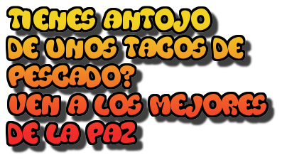
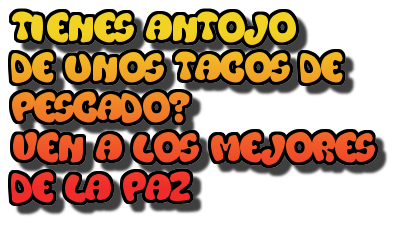

¡Prueba nuestra deliciosos tacos de pescado Ven a la taqueria Los enamorados, un lugar de tradición. Tenemos más de 37 años de experiencia preparando los mejores tacos de pescado en La Paz.
En nuestro restaurante de tacos encontrarás una gran variedad de platillos, postres y bebidas naturales y preparadas. ¡Conoce nuestro menú!
Contamos con un amplio estacionamiento. Ven y disfruta de nuestros deliciosos tacos Todo nuestro menú cumple con los estándares de calidad y sabor.
 
